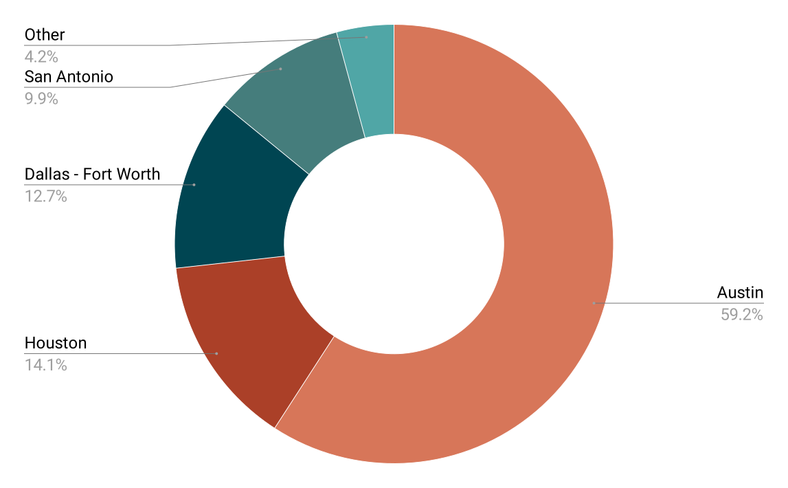
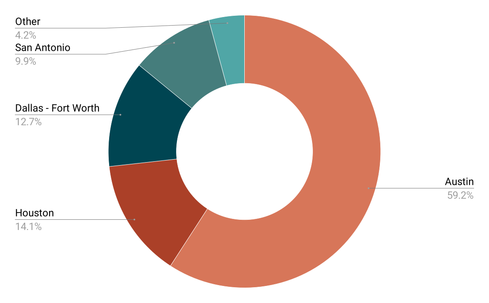
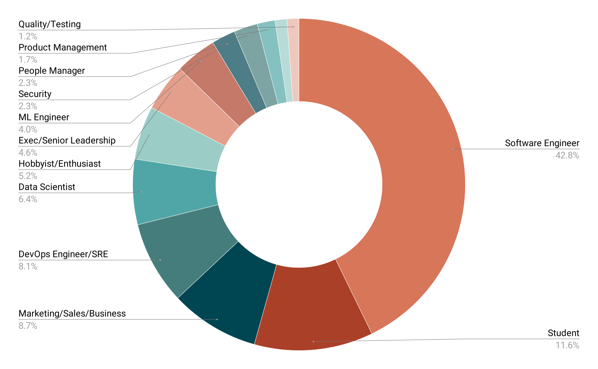
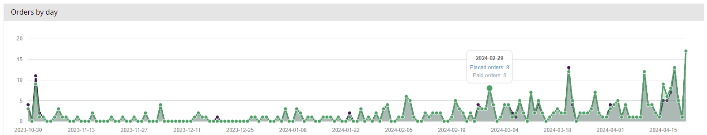
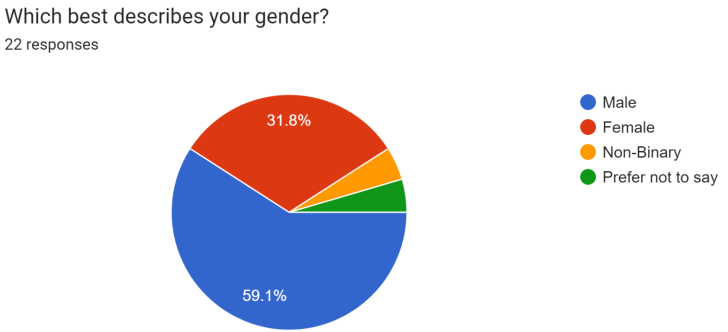
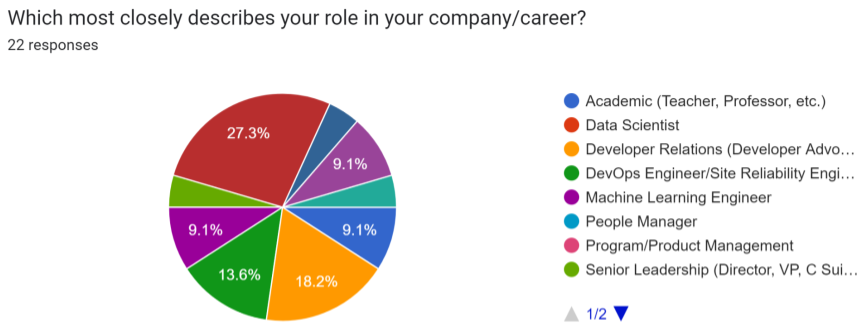
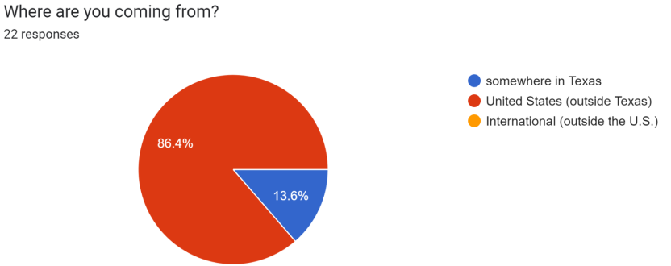

2024 Conference Recap
The annual PyTexas Conference was held at the Austin Central Library April 19 - 21, 2024 in Austin, TX. It was our largest conference yet, and we're excited to share some behind the scenes data with you.
PyTexas 2024 Conference¶
18 years after PyCamp Texas, 2024 will go down in history as the biggest PyTexas Conference yet. Every prior record, from attendance to CFP submissions, was shattered this year. So let's jump into it.
What Was New This Year?¶
This year we decided to try something new (a hybrid conference experience) and bring back something old (tutorials).
Hybrid Conference¶
During the pandemic many conferences moved to virtual formats, and as they returned to in-person activities, they included a hybrid experience. PyTexas 2020 was originally planned as an in-person event that shifted to virtual out of necessity. In 2021 the organizers decided to take a hiatus and evaluate the situation again in 2022. In 2022, PyTexas was the first Python conference globally to come back in-person in March, just prior to PyCon US in Salt Lake City. At that time, funding and staffing were severely limited, so we were unable to do a hybrid experience. These limitations continued into 2023, leading to a in-person only conference for both years.
However, in 2024, we were finally staffed and financially stable enough to experiment with a hybrid conference. We decided to take a more novel approach and run our hybrid conference through the PyTexas Discord Server. We have been building a community on Discord since 2022, which now hosts our virtual meetup, so we thought it would be a good experiment to hold our virtual conference there.
We are happy to report that our hybrid conference was a success. We sold 43 virtual tickets, and attendees who had an in-person ticket were also able to join the virtual experience. We had many in-person attendees thank us for this experience, as some had to step out for brief periods and were still able to attend the conference.
One thing we strived for this year was to blend the in-person and virtual experience as much as possible so attendees from both would be able to interact with each other. We did this a few ways. First, we encouraged people to chat in a conference-specific Discord text chat. Both in-person and virtual attendees engaged with each other and bridged the gap. We were very pleased with the level of interaction that was occurring. Next, we used Slido for all speaker questions. This decision was highly praised by both attendees and speakers alike. Slido allowed us to have attendees, either remote or in-person, ask questions to the speaker during their talk. Other attendees could see these questions and upvote the ones they also wanted to ask. We had our organizers moderating the questions and approving them prior to being visible, which allowed us to ensure safety for our speakers and attendees. The questions were then asked into the microphone on stage by our emcees, allowing the speaker to answer and the question to be recorded on video. This sped up our Q&A portion and made speakers feel more comfortable answering questions.
Overall, the hybrid experience was a success, and we look forward to continuing with it in the future.
Tutorials¶
Tutorials are not new to the PyTexas Conference, but it is the first time we've had tutorials since 2017. Long-time attendee, speaker, and Keynoter Andrew "Pandy" Knight and organizer Mason Egger delivered the tutorials this year. We did not hold an open CFP for tutorials this year, but instead preselected our presenters. We made this choice because we weren't sure what the turnout would be for the tutorials, so we decided to select people who are known PyTexas regulars who would attend either way and were willing to take the gamble on attendance.
Fortunately, tutorials were a smashing success. We sold 97 tutorial tickets this year, which were an add-on to the main conference and gave access to both tutorials. Nearly every tutorial ticket holder checked in and attended at least one tutorial, with the vast majority attending both.
The community reaction to tutorials was universally strong and we're excited to bring tutorials back next year. We're still deciding if we're going to open a CFP for tutorials next year, but signs are trending in that direction.
Friends of PyTexas¶
On the second day of the conference we announced our new Friends of PyTexas program. This program allows community members to financially support the PyTexas foundation in its mission to bring Python education and community to the state of Texas. We had a few community members sign up to support us immediately, and to that we say thank you.
If you're interested in supporting us, check out the Friends of PyTexas page.
Attendance¶
2024 was a record breaking year for ticket sales. This year we sold 319 attendance tickets. We sold 276 in-person tickets and 43 virtual tickets. We initially set our capacity at 250 in-person attendees, then had to increase it two weeks prior to the conference to 275. Somehow, we had an off-by-one error and wound up selling 276 in-person tickets. Of the 276 tickets sold, we had 229 attendees check in.
Statistics¶
Location
 

- 81.5% of attendees were from Texas
- 59.2% from Austin
- 14.1% from Houston
- 12.7% from Dallas - Fort Worth
- 9.9% from San Antonio
- 4.2% from other areas in Texas
- 13.9% are from other states within the United States
- 4.6% were from outside the United States
Roles

- 42.8% - Software Engineer
- 11.6% - Students
- 8.7% - Marketing/Sales/Business
- 8.1% - DevOps
- 6.4% - Data Science
- 5.2% - Hobbyist/Enthusiast
- 4.6% - Executive/Senior Leadership
- The rest consists of ML Engineers, Security, People Managers, Product Management, QA
Experience

- 11.6% - Less than 1 year
- 24.9% - 1 to 3 years
- 20.2% - 4 to 7 years
- 20.2% - 7 to 15 years
- 23.1% - 15+ years
Orders by Day

A few conclusions we've made based on ticket sales this year and years prior:
- You have your "regulars" who attend every year. They will take advantage of early bird sales.
- Announcements drive ticket sales. We saw noticeable increases after we announced
keynotes, tutorials, speakers, etc.
- The largest increase was after we released the talk schedule.
- You will still sell a majority of your tickets in the month leading up to the event.
Sponsors¶
Sponsorship in the return to in-person conferences world have been few and far between. We are immensely grateful our sponsors this year, Temporal Technologies and AppSignal for their support. We also want to thank the Python Software Foundation for their generous grant.
Without them certain portions of our event would simply not have been financially possible.
Statistics¶
This year we brought in $12,750 from sponsorships and grants. We reached out to roughly 50 companies this year to sponsor PyTexas. When they responded, the response was usually:
- We aren't sponsoring events right now.
- You aren't big enough for us to consider.
- We haven't finalized event plans, we'll get back to you.
We publish this information not to shame companies who aren't sponsoring. We understand the current economic climate. We write this so that other conference organizers who are experiencing the same thing don't feel like it's just them. It's everyone.
Finances¶
PyTexas 2024 cost $36,657.59 to operate. The largest budget items for us were venue, catering, A/V, and our after party. We sold 319 tickets of varying cost, including add-ons such as shirts, tutorials, and the after party, and made $36,545.00 in gross revenue (prior to fees). To the best of our knowledge, this is the first year that ticket sales were able to completely fund the conference. This was possible due to the increase in capacity for in-person, plus the addition of a virtual ticket.
All excess funds from this year will be used to fund ongoing PyTexas programs such as the meetup, infrastructure costs, and any future PyTexas event (such as the PyTexas 2025 Conference).
Speakers¶
This was by far one of the most exciting speaker lineups we've ever had! We continue to get compliments on how good the talks were and how much everyone enjoyed them. This year we were overjoyed to invite Lynn Root and Carol Willing to keynote this year. Both gave phenomenal keynotes that people kept raving about.
From teaching Python, to AI/ML, to DevOps, to using Python for audio, this year we had something for everyone.
CFP Statistics¶
CFP submissions this year broke yet another record of ours, the most submissions to our CFP. Here's some stats:
- 103 submissions from 81 speakers from a wide variety of backgrounds.
- 5 indicated they were first time speakers
- 59 indicated they had never spoken at PyTexas before
The vast majority of our CFP submissions came in within the last few weeks of the CFP

The Prevalence of DevRel¶
Due to the recent anecdotes and social media posts about Developer Relations professionals dominating conference speaking slots, we decided to ask our speakers if they were considered "Professional Speakers", meaning they work in Developer Relations, Sales, Marketing, or any part of their job requires them to speak at conferences.
This year we only gathered data, no decisions about acceptances were made based on this data.
- 16/81 speakers submitted to PyTexas responded to "Are you a professional Speaker" with yes
- 21/103 proposals are from this group
- 4 speakers had talks initially accepted out of an 18 slot lineup
- 3 of these speakers declined or had to cancel, along with 3 others who do not consider themselves professional speakers
- In the filling of these 6 rejections, 2 more professional speakers were accepted
- This leads us to a final of 3 speakers who consider themselves professional speakers out of 18 talks that are scheduled, leading us to ~17% of our conference being made up of professional speakers.
Tutorials and Keynote Speakers are not included in this calculation.
Speaker Statistics¶
We had a great selection of diverse speakers this year. Here's a more in-depth breakdown of this years speakers:
Speaker Race/Ethnicity¶

- 63.6% - White/Caucasian
- 22.7% - Asian/Pacific Islander
- 4.5% - Jewish
- 4.5% - Black or African American
- 4.5% - Hispanic
Speaker Gender¶

- 59.1% - Male
- 31.8% - Female
- 4.5% - Non-binary
- 4.5% - Prefer not to say
Speaker Professional Role¶

- 27.3% - Data Scientist
- 18.2% - Developer Relations
- 13.6% - DevOps
- 9.1% - Academic (Teacher, Professor, etc)
- 9.1% - QA
- 9.1% - Machine Learning Engineer
- 4.5% - Senior Leadership
- 4.5% - Cyber Security
- 4.5% - Student
Speaker Location¶

- 86.4% - Outside of Texas but within the United States
- 13.6% - Texas Resident
Opportunity Grants¶
Every year we offer opportunity grants to community members who request assistance to attend PyTexas. In 2023 we provided a total of $1000 to two members of our community so they could attend. This year we were proud to be able to more than double the amount of money we were able to disperse. This year we provided a total of $2500 to five individuals to attend, all of whom came from under represented communities in tech!
While we weren't able to provide financial assistance to every applicant, we were able to provide free virtual tickets to every person who applied for assistance so they could watch and interact with the conference, regardless of their location.
Conclusion¶
2024 was by far our most exciting and largest PyTexas event yet. It was heartening to surpass our pre-pandemic numbers, and not by a little, but a lot. We're excited to continue to see the Python community in Texas grow and to continue providing events for the forseeable future. All recordings of the talks can be found on the PyTexas 2024 website or on our YouTube Channel.
PyTexas 2025 dates have already been set, we'll be returning to the Austin Central Public Library April 11 - 13, 2025.
We hope to see y'all there!